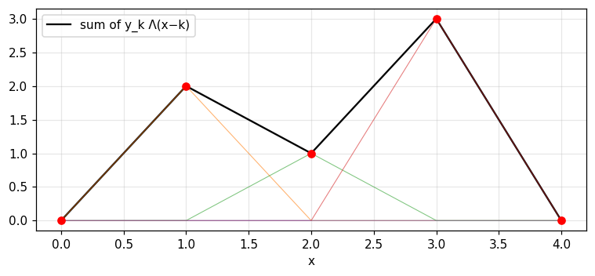
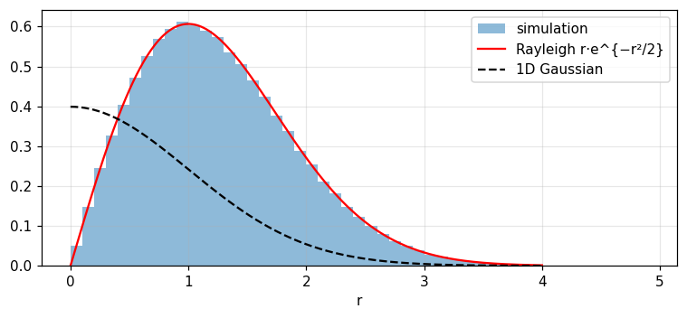
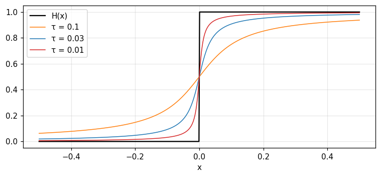
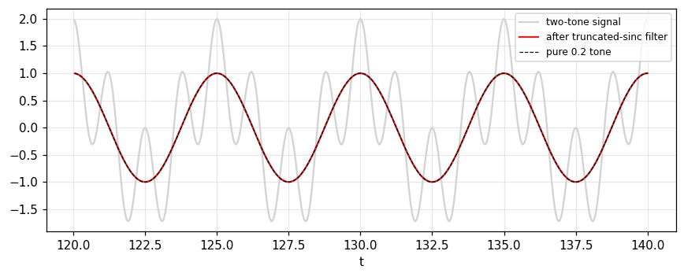
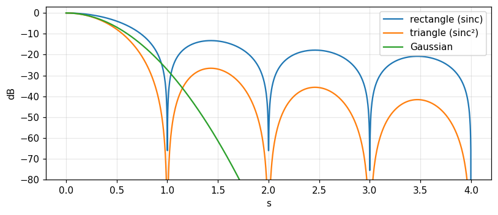

Notation for useful functions: Π, Λ, H, sgn, sinc, Gaussian
Write piecewise functions with \Pi, \Lambda, H, \text{sgn}, R instead of case-by-case conditions.
Use the Gaussian normalisation e^{-\pi x^2} and read its dispersion parameters.
State the properties of \text{sinc} and \text{sinc}^2: zeros, area, cutoff, role as a low-pass filter.
Understand why convolution with H is integration, and why H(0) rarely needs stating.
Compare rectangular, triangular and Gaussian windows through the sidelobes of their transforms.
Use the buttons, the dots or the ← → keys to move between slides.
PART 1/5
01
The rectangle and the triangle
Situation: Many useful functions in Fourier analysis must be defined piecewise because of abrupt changes.
Complication: A "sloping step function" is simple physically but clumsy when written piecewise, unlike 1+x^2.
Resolution: Introduce dedicated symbols for a few basic functions to regain compactness.
Why notation is needed
The rectangle \Pi as a gate
The triangle \Lambda and polygonal functions
1/5 · The rectangle and the triangle
The problem: functions given graphically
The function f(x) equal to 0 for x<0, x for 0\le x\le1 and 1 for x>1 is simple yet awkward to write piecewise, compared with the compact expression 1+x^2. Physically a "sloping step function" may be at least as simple as a smoother function (Bracewell, p. 55).
1/5 · The rectangle and the triangle
Fourier and functions given by a graph
Fourier himself was concerned with representing functions given graphically, and according to the English mathematician and historian E. W. Hobson was the first fully to grasp that a single function may consist of detached portions given arbitrarily by a graph (p. 55). This chapter introduces notation to regain compactness and clarity.
1/5 · The rectangle and the triangle
The rectangle function \Pi(x)
The rectangle function of unit height and base, centred at the origin (Fig. 4.1, pp. 55 to 56):
f(x)=\Pi(x)\cos\pi x is compact notation for a function equal to \cos\pi x in |x|<\tfrac12 and 0 outside (Fig. 4.2). Multiplying by \Pi selects ("gates") a segment of any function. The energy of that segment is \int\Pi(x)\cos^2\pi x\,dx = 0.5 (p. 56).
1/5 · The rectangle and the triangle
A displaced rectangle of height h and base b
The function h\,\Pi[(x-c)/b] is a rectangle of height h and base b centred at x=c (Fig. 4.3). Purely by multiplying by a suitably displaced rectangle we can select any segment with any amplitude and reduce the rest to zero (p. 56). Example h=3, b=2, c=1: area hb = 6, numerical integration agrees.
General rectangle
h\,\Pi\!\left(\frac{x-c}{b}\right):\quad\text{height}\ h,\ \text{base}\ b,\ \text{centre}\ c
1/5 · The rectangle and the triangle
Where the rectangle appears: running means and filtering
Through convolution it gives running means (module 3).
In the frequency domain multiplying by it is ideal low-pass filtering.
It is "Dirichlet's discontinuous factor" in the theory of convergence of Fourier series.
Other names: rect x, gate function, window function, boxcar function (p. 57).
1/5 · The rectangle and the triangle
The value at the jump hardly matters
Bracewell almost never states \Pi(\pm\tfrac12), and it is undesirable to emphasise the value \tfrac12 halfway up the jump when drawing, like a high-quality oscillogram that never shows extra brightening halfway up the discontinuity (p. 57). The reason: a single point does not change an integral. Measured: the area with \Pi(\pm\tfrac12)=0, \tfrac12 or 1 differs by at most 2.0e-04, the size of the grid error.
1/5 · The rectangle and the triangle
The triangle function \Lambda(x)
The triangle function has unit height and area. It gains its importance largely from being the self-convolution of \Pi(x), and it gives compact notation for polygonal functions, continuous functions made of linear segments (p. 57). h\Lambda(x/b) has height h, base 2b and area hb.
Numerical test: \Lambda=\Pi*\Pi and polygonal functions
The numerical convolution of \Pi with itself on a fine grid deviates from 1-|x| by at most 1.1e-16, area 1. The polygonal function through (0,0),(1,2),(2,1),(3,3),(4,0) equals \sum y_k\Lambda(x-k): deviation from interp at most 1.1e-16, and at x=2.5 it equals 2.

Figure 1. The polygonal function through five points (black) is the sum of shifted triangles Λ scaled by the ordinate at each knot (thin lines).
PART 2/5
02
Exponentials, the Gaussian and the Rayleigh curve
Situation: The Gaussian is everywhere, but each field normalises it differently.
Complication: The statistical normalisation (area 1 and \sigma=1) makes the Fourier transform of a Gaussian a different-looking Gaussian.
Resolution: Bracewell picks e^{-\pi x^2}: central ordinate 1, area 1, and self-transforming.
Four exponentials
Gaussian normalisation and dispersion parameters
Rayleigh and the drunkard's walk
2/5 · Exponentials, the Gaussian and the Rayleigh curve
Four exponentials
Fig. 4.5 shows from left to right: a rising exponential, a falling exponential, a truncated falling exponential and a double-sided falling exponential (p. 57).
Name
Formula
rising
e^{x}
falling
e^{-x}
truncated falling
e^{-x}H(x)
double-sided
e^{-|x|}
2/5 · Exponentials, the Gaussian and the Rayleigh curve
Bracewell's Gaussian normalisation
The function \exp(-\pi x^2) is chosen so that both the central ordinate and the area under the curve equal 1, and its Fourier transform is the same normalised Gaussian (p. 58). The notebook measures area 1, central ordinate 1, and the mean of x^2 equal to 0.1592.
2/5 · Exponentials, the Gaussian and the Rayleigh curve
The statistical form and the probability ordinate
In statistics the Gaussian is the "normal (error) distribution with zero mean", normalised so the area and standard deviation are 1. For standard deviation \sigma the probability ordinate is \frac{1}{\sigma\sqrt{2\pi}}e^{-x^2/2\sigma^2} with central ordinate 0.3989/\sigma (p. 58). Compared with e^{-\pi x^2} we have \sigma=(2\pi)^{-1/2} = 0.3989.
Probability ordinate
\frac{1}{\sigma\sqrt{2\pi}}\,e^{-x^2/2\sigma^2}
2/5 · Exponentials, the Gaussian and the Rayleigh curve
The error integral erf, erfc and the probability integral
The error integral \text{erf}\,x=\frac{2}{\sqrt\pi}\int_0^xe^{-t^2}dt with complement \text{erfc}\,x=1-\text{erf}\,x; the probability integral a(x) is widely tabulated. For the book's Gaussian, \int_0^xe^{-\pi t^2}dt=\tfrac12\text{erf}(\sqrt\pi\,x) (pp. 58 to 59). At x=1: numerical integration and the formula give 0.4939.
2/5 · Exponentials, the Gaussian and the Rayleigh curve
Dispersion parameters of e^{-\pi x^2}
The book lists five parameters (p. 59); the notebook recomputes each by two methods (closed form and numerical integration or root finding):
Parameter
Value
In units of \sigma
probable error (semi-interquartile range)
0.2691
0.6745
mean absolute error
0.3183
0.7979
standard deviation
0.3989
1
width to half-peak
0.9394
2.355
equivalent width
1
2.5066
2/5 · Exponentials, the Gaussian and the Rayleigh curve
What percentage lies within each parameter?
The probable error characterises the middle 50 percent of a set of measurements: "the students have an average height of 165 ± 10 cm" means half of the students are in 155 to 175 cm unless another measure of spread is specified (p. 59). For a normal distribution the percentage within one standard deviation is 68.27, within the mean absolute error 57.51, within the semi-width to half-peak 76.1, within the semi-equivalent width 78.99.
2/5 · Exponentials, the Gaussian and the Rayleigh curve
Two dimensions and the Rayleigh distribution
The two-dimensional Gaussian e^{-\pi(x^2+y^2)} is still self-transforming, with unit central ordinate and unit volume. With circular symmetry the probability of finding the radial distance between r and r+dr is 2\pi r\,dr times the ordinate, so R(r)=\frac{r}{\sigma^2}e^{-r^2/2\sigma^2}. This is Rayleigh's distribution (pp. 59 to 60).
2/5 · Exponentials, the Gaussian and the Rayleigh curve
The drunkard's walk: the paradox of the peak away from the origin
Rayleigh's drunkard's-walk problem: each step is in an arbitrary direction. After a long time the probability at (x,y) is a two-dimensional Gaussian (peak at the origin) yet the probability at distance r is Rayleigh (peak away from the origin). The two sound contradictory and Bracewell invites you to contemplate it (p. 60). A simulation of 400 000 points: mean distance 1.253 (theory 1.2533), peak at 0.98, and 0.395 of the points lie within r<\sigma (theory 0.3935).

Figure 2. Distance from the origin of 400 000 two-dimensional Gaussian points: the histogram matches the Rayleigh distribution (red), peaking at r = σ rather than at the origin, unlike the one-dimensional Gaussian (dashed).
2/5 · Exponentials, the Gaussian and the Rayleigh curve
Gaussian sequences for transforms in the limit
The sequence \exp(-\pi\tau^2x^2) as \tau\to0 multiplies functions whose integrals do not converge; the limit is 1. The sequence |\tau|^{-1}\exp(-\pi x^2/\tau^2) recovers ordinary functions, in cases of impulsive behaviour, by convolution. The Gaussian suits this because all its derivatives are continuous and it dies away faster than any power of x (p. 60). Measured: \int\cos x\,|\tau|^{-1}e^{-\pi x^2/\tau^2}dx=e^{-\tau^2/4\pi} equals 0.9235 (\tau=1), 0.9803 (\tau=0.5), 0.9992 (\tau=0.1), tending to \cos0=1.
PART 3/5
03
Heaviside's step, the ramp and the sign function
Situation: Voltages switched on suddenly and forces that begin to act at a definite time are familiar jumps in physics.
Complication: To write them compactly and turn them into easy integrals we need one basic function for a jump.
Resolution:H(x), with the ramp R(x), convolution as integration, and the sign function \text{sgn}\,x.
H, the ramp and integration
The value H(0) and null functions
The sign function
3/5 · Heaviside's step, the ramp and the sign function
The unit step H(x)
H(x) is 0 for x<0, 1 for x>0 (and usually \tfrac12 at 0). It represents voltages suddenly switched on or forces that begin to act at a definite time and are constant thereafter (Fig. 4.8, p. 61). Multiplying a function by H reduces it to zero on the negative side and leaves it intact on the positive side.
3/5 · Heaviside's step, the ramp and the sign function
Switching notation
A sinusoid switched on at t=0 is \sin t\,H(t) (Fig. 4.10). A voltage zero until t_0 and then jumping to a steady E is EH(t-t_0) (Fig. 4.11). Any function with a jump decomposes into a continuous function plus a suitably displaced step (pp. 61 to 62).
3/5 · Heaviside's step, the ramp and the sign function
\Pi is made of steps alone
The rectangle has two unit discontinuities, one positive and one negative; remove them and nothing remains. Hence \Pi(x)=H(x+\tfrac12)-H(x-\tfrac12) (Fig. 4.9, p. 61). The notebook checks it numerically on a grid: yes, even at x=\pm\tfrac12 with H(0)=\tfrac12.
3/5 · Heaviside's step, the ramp and the sign function
The ramp R(x)=xH(x)
(F/m)R(t) is the velocity of a mass m to which a steady force FH(t) has been applied, or the current in a coil of inductance m across which the potential difference is FH(t). R is the integral of H and H is the derivative of R (Fig. 4.12, pp. 61 to 62). Notebook: the numerical convolution H*H at x=2 gives 2, exactly R(2).
3/5 · Heaviside's step, the ramp and the sign function
Convolution with H is integration
Because H(x-x') is zero for x'>x, integrals with variable limits become constant-limit integrals: \int_{-\infty}^xf(x')dx'=\int f(x')H(x-x')dx'. Hence H*f is the integral of f (Fig. 4.13, pp. 62 to 63). With f=e^{-\pi x^2} at x=0.5: numerical convolution with a step gives 0.8945, exactly \tfrac12[1+\text{erf}(\sqrt\pi\,x)] (largest deviation 0.001).
Convolution with the step
H*f(x)=\int_{-\infty}^{x}f(x')\,dx'
3/5 · Heaviside's step, the ramp and the sign function
The value H(0) and consistency
It is usually unimportant to define H(0), but for compatibility with the theory of single-valued functions it is desirable to assign \tfrac12. Then R'(0+)=1, R'(0-)=0 and the symmetric derivative at 0 equals \tfrac12; the Fourier integral, when it converges at a point of discontinuity, also gives the midvalue (p. 63). Measured: [R(\Delta)-R(-\Delta)]/2\Delta = 0.5.
3/5 · Heaviside's step, the ramp and the sign function
Choosing H(0)=0 and null functions
There is no obligation to take H(0)=\tfrac12; it is sometimes taken as zero, a natural consequence of the view \hat H(x)=\lim_{\tau\to0}(1-e^{-x/\tau})H(x) (Fig. 4.14). Then H=\hat H+\tfrac12\delta^{\circ} with \delta^{\circ} a null function: zero everywhere except the origin, with integral always zero (pp. 63 to 64). Measured: \int(H-\hat H)\,dx=\tau = 0.01 for \tau=0.01, tending to 0.
3/5 · Heaviside's step, the ramp and the sign function
Continuous approximations to H
The book lists many smooth approximations tending to H(x) as \tau\to0, for example \tfrac12+\frac1\pi\arctan\frac x\tau, the integral of a Lorentzian (p. 64). At x=0.1: with \tau=0.1 we get 0.75, with \tau=0.01 we get 0.9683, approaching 1. The difference between H and any version with H(0)\ne\tfrac12 is a null function, invisible to physical measurements of finite resolving power, so it is more graceful not to mention H(0) (pp. 64 to 65).

Figure 3. The continuous approximation ½ + arctan(x/τ)/π of the step H(x): as τ decreases the curve steepens at the origin and approaches H.
3/5 · Heaviside's step, the ramp and the sign function
The sign function \text{sgn}\,x
\text{sgn}\,x equals +1 or -1 according to the sign of x, and \text{sgn}\,x=2H(x)-1 (a jump of 2). Unlike H it is an odd function, whereas H has both an even part (\tfrac12) and an odd part (\tfrac12\text{sgn}\,x): the notebook confirms yes. Moreover \lim\int_{-a}^{a}\text{sgn}\,x\,dx=0 while \int_{-a}^{a}H\,dx=a does not exist as a\to\infty (p. 65).
The sinc function, sinc squared and two-dimensional analogues
Situation: The function \sin\pi x/\pi x appears in filtering, interpolation, diffraction and antennas.
Complication: Without a dedicated symbol and a common normalisation we keep rewriting it and losing track of constants.
Resolution: Bracewell names it \text{sinc}\,x with central ordinate and area 1 and ties it to \Pi through the Fourier transform.
Properties and the low-pass role
The integral of sinc and the sine integral
\text{sinc}^2, \text{jinc} and drawing conventions
4/5 · The sinc function, sinc squared and two-dimensional analogues
Definition and properties of \text{sinc}\,x
\text{sinc}\,x=\sin\pi x/\pi x has \text{sinc}\,0=1, vanishes at every nonzero integer, and has total area 1. The word "sinc" appears in Woodward (1953) and has achieved some currency; a table is on p. 508 (pp. 65 to 66). Notebook: \text{sinc}(3) = 0; \int_0^{100}\text{sinc} = 0.499, tending to \tfrac12 (half of area 1).
4/5 · The sinc function, sinc squared and two-dimensional analogues
Sinc and \Pi are a transform pair
The unique properties of sinc go back to its spectral character: it contains components of all frequencies up to a limit and none beyond, with a flat spectrum up to the cutoff. By the choice of notation, \text{sinc}\,x and \Pi(s) are a Fourier transform pair, so the cutoff of sinc is 0.5 cycles per unit of x (p. 66). Measured: \int_{-1/2}^{1/2}e^{i2\pi sx}ds at x=0.3 is 0.8584, exactly \text{sinc}(0.3).
4/5 · The sinc function, sinc squared and two-dimensional analogues
Sinc in convolution: ideal low-pass filtering and interpolation
When sinc enters convolution it performs ideal low-pass filtering: it removes all components above its cutoff and leaves all below unaltered, and under special circumstances (the sampling theorem, chapter 10) it performs interpolation (p. 66). Test: the signal \cos2\pi(0.2)t+\cos2\pi(0.8)t convolved with a truncated sinc: the gain at 0.2 is 0.998 and at 0.8 is 0.001; a brick-wall filter through the FFT gives 1 and 0.001.

Figure 4. Convolution with a truncated sinc keeps the 0.2 tone (red on top of the dashed line) and removes the 0.8 tone (the fast component vanishes from the gray signal).
4/5 · The sinc function, sinc squared and two-dimensional analogues
The integral of sinc: the sine integral \text{Si}
With \text{Si}\,x=\int_0^x\frac{\sin u}{u}du we have \int_0^x\text{sinc}\,u\,du=\text{Si}(\pi x)/\pi, \text{sinc}\,x=\frac{d}{dx}\frac{\text{Si}(\pi x)}{\pi} and H*\text{sinc}=\tfrac12+\text{Si}(\pi x)/\pi (Fig. 4.16, pp. 66 to 67). The integral curve overshoots 1 before returning: the maximum is 1.0895 at x=1, a Gibbs-type overshoot.
4/5 · The sinc function, sinc squared and two-dimensional analogues
Sinc squared
\text{sinc}^2x represents the power radiation pattern of a uniformly excited antenna, or the intensity of light in the Fraunhofer diffraction pattern of a slit. It has a cutoff spectrum since squaring cannot generate frequencies higher than the sum-frequency of any pair of constituents. Its transform is \Lambda(s), with cutoff one cycle per unit (Fig. 4.17, pp. 66 to 68). Measured: \text{sinc}^2(0.5) = 0.4053 by both \int\Lambda(s)e^{i2\pi s/2}ds and the formula; area 1.
4/5 · The sinc function, sinc squared and two-dimensional analogues
The two-dimensional analogue: \text{jinc}
In two dimensions the analogous function is J_1(\pi r)/2r, which has unit volume, a central value \pi/4 and a two-dimensional transform equal to a circular pulse. Another generalisation with analogous filtering and interpolating properties is \text{sinc}\,x\,\text{sinc}\,y, with transform \Pi(u)\Pi(v) (p. 68). Measured: the central value 0.7854 and the first zero at r = 1.2197, the radius of the Airy disc in optics.
4/5 · The sinc function, sinc squared and two-dimensional analogues
Graphical conventions
For clarity, theorems on Fourier transforms are illustrated by real examples where possible, marking the points where the abscissa and ordinate equal unity. Purely imaginary quantities are always drawn dashed, so complex quantities are shown unambiguously by real and imaginary parts (Fig. 4.18); one may also plot modulus and phase (Fig. 4.19), draw in three dimensions (Fig. 4.20) or plot the values of F(s) on the complex plane (Fig. 4.21) (pp. 68 to 69).
4/5 · The sinc function, sinc squared and two-dimensional analogues
Table 4.1: special symbols
Bracewell collects the symbols (p. 70):
Function
Notation
rectangle
\Pi(x)
triangle
\Lambda(x)
Heaviside unit step
H(x)
sign (signum)
\text{sgn}\,x
impulse symbol (chapter 5)
\delta(x)
sampling symbol (chapter 5)
\text{III}(x)=\sum\delta(x-n)
even, odd impulse pair
\text{II}(x), \text{I}(x)
filtering, interpolating
\text{sinc}\,x
jinc
J_1(\pi x)/2x
convolution, serial product, correlation
*, \{f\}*\{g\}, \star
PART 5/5
05
Using the notation: building functions, windows and applications
Situation: With the notation in hand we want to build practical functions and predict their transforms.
Complication: A function often gets written piecewise, and different windows give different spectra (leakage in module 1).
Resolution: Combine \Pi, \Lambda, H to build the opening function, compare windows through sidelobes, and see a scanning slit as convolution with \Pi.
Rewriting the opening function and a table of transform pairs
Three windows and their sidelobes
A scanning slit and running means
5/5 · Using the notation: building functions, windows and applications
Rewriting the opening function
The function f(x) from the start of the chapter (0, then x on [0,1], then 1) equals R(x)-R(x-1), and also x\,\Pi(x-\tfrac12)+H(x-1). All three writings coincide on a grid (yes); at x=0.4 it equals 0.4.
5/5 · Using the notation: building functions, windows and applications
Transform pairs for the functions just learned
The book tabulates these pairs in chapter 22; here we check them numerically at s=0.3 (numerical integral versus formula; 5 of 5 pairs hold):
f(x)
F(s)
F(0.3)
\Pi(x)
\text{sinc}\,s
0.8584
\Lambda(x)
\text{sinc}^2s
0.7368
e^{-\pi x^2}
e^{-\pi s^2}
0.7537
e^{-|x|}
2/(1+4\pi^2s^2)
0.4393
e^{-x}H(x)
1/(1+i2\pi s)
|F| = 0.4686
5/5 · Using the notation: building functions, windows and applications
Three windows: rectangle, triangle, Gaussian
Cutting a signal with a window multiplies the spectrum by the window's transform's convolution. The transform of \Pi is \text{sinc}\,s, of \Lambda is \text{sinc}^2s, of a Gaussian a Gaussian. The first sidelobe of \text{sinc} has magnitude 0.2172 (-13.26 dB), that of \text{sinc}^2 only 0.0472 (-26.52 dB), and the Gaussian has none. That is why leakage in module 1 is heavy with the rectangular window.

Figure 5. The transforms of three windows in dB: the rectangle (sinc) has the highest first sidelobe, the triangle (sinc²) has twice as many dB below, the Gaussian decays smoothly with no sidelobes.
5/5 · Using the notation: building functions, windows and applications
The trade-off: sidelobes versus main-lobe width
The triangular window lowers the sidelobes but widens the main lobe (a null at |s|=1 versus 0.5 for the rectangle at the same base b=1; a triangle of base 2 has its null at 1). No window has both low sidelobes and a narrow main lobe; this is a manifestation of the uncertainty relation (chapter 8).
5/5 · Using the notation: building functions, windows and applications
A scanning slit is convolution with \Pi
The optical sound track on old motion-picture film is scanned by a slit of width w, and the scanning introduces convolution with a rectangle of width w (chapter 3 problem 23, p. 53). For a sinusoidal track of period p=1: a slit w=0.25 keeps 0.9003, w=0.5 keeps 0.6366, w=1 keeps 0 (the tone is wiped out completely). The gain is \text{sinc}(wf_0).
5/5 · Using the notation: building functions, windows and applications
An L-point running mean and sinc
A running mean is convolution with \Pi, so its frequency response is sinc, more precisely the Dirichlet kernel for a discrete sequence. For L=8 at f=0.05 cycles per sample: the exact value is 0.7599 (measured with freqz and by the formula) and the sinc approximation 0.7568. The approximation is good for large L and small f.
5/5 · Using the notation: building functions, windows and applications
Tips for using the notation
Set H(0)=\tfrac12 or do not mention it; do not emphasise the value at a jump when drawing (pp. 57, 63).
Use H to turn variable integration limits into constant ones (p. 62).
Choose e^{-\pi x^2} when self-transformation is wanted; convert to the statistical form with \sigma=(2\pi)^{-1/2} (p. 58).
Draw imaginary quantities dashed (p. 68).
5/5 · Using the notation: building functions, windows and applications
Cross-reference to Barkat
The Gaussian and Rayleigh of this module are the distributions of Barkat sections 2.3.2 (Normal) and 2.3.6 (Rayleigh, Rice, Maxwell). Barkat uses the step and the impulse in section 1.3.1 to write the cumulative distribution and density of a discrete random variable: F_X(x)=\sum_kP_k\,H(x-x_k). Module 11 uses both.
5/5 · Using the notation: building functions, windows and applications
Self-check
Write \Lambda(x) using \Pi and \Pi(x) using H.
Where does sinc vanish and what is its cutoff?
Why does the Rayleigh peak lie away from the origin although the 2D Gaussian peaks there?
Hints: \Pi*\Pi and H(x+\tfrac12)-H(x-\tfrac12); nonzero integers and 0.5; because the ring area 2\pi r\,dr grows with r.
SUMMARY
Takeaways
\Pi is a gate, \Lambda=\Pi*\Pi is the triangle, and combinations of H and R build every polygonal and switching function.
The Gaussian e^{-\pi x^2} has central ordinate and area 1 and is self-transforming; \sigma=(2\pi)^{-1/2}.
Convolution with H is integration; H(0) hardly needs stating; \text{sgn}\,x=2H-1 is odd.
\text{sinc}\,x\supset\Pi(s): zeros at integers, cutoff 0.5, ideal low-pass; \text{sinc}^2\supset\Lambda with cutoff 1.
The triangular window lowers sidelobes compared with the rectangle, at the cost of a wider main lobe.
📜 Theory & historical background
The chapter opens with a historical remark: Fourier was concerned with functions given graphically, and according to E. W. Hobson he was the first to grasp that a function may consist of detached portions given arbitrarily (p. 55).
The word "sinc" appears in Woodward (1953) and has achieved some currency (p. 66). The name "Dirichlet's discontinuous factor" for \Pi belongs to the theory of convergence of Fourier series (p. 57). The "drunkard's walk" problem is attached to Rayleigh (p. 60), and the step function bears Heaviside's name (p. 61).
🔎 Real-world case study
A slit that wipes out a tone. On old film the sound sits in an optical track and is read through a slit of width w; reading is convolution with a \Pi of width w. A pure tone of track period p=1: a slit w=0.25 keeps 0.9003 of the amplitude, w=0.5 keeps 0.6366, and a slit w=1 (exactly one period) erases the tone (0). The essence is the gain \text{sinc}(wf_0) with a zero at wf_0=1.
The same mechanism explains why running means have zeros (module 3) and why the rectangular window leaks (module 1): every cut by \Pi multiplies the spectrum by sinc.
The notebook generates its own data in code, so no external files are needed. Every number on this page is printed by the notebook and cross-checked with two independent methods.
⚠️ Common misreadings
"\Pi(\pm\tfrac12) must be specified for integrals to be right."
No: a single point does not change an integral (deviation 2.0e-04 between conventions). Bracewell almost never states it (p. 57).
"The Gaussian in statistics and in this book are the same."
They differ in normalisation: statistics uses \sigma=1 and area 1; the book uses e^{-\pi x^2}, with \sigma = 0.3989 and central ordinate 1 (p. 58).
"The most likely distance of the drunkard is 0 because the Gaussian peaks at the origin."
The density in (x,y) peaks at the origin, but the density in distance carries the extra factor 2\pi r so it peaks at r=\sigma: the simulation gives 0.98 (p. 60).
"Sinc is the ideal filter, so use it as is."
Sinc is infinite and non-causal and must be truncated; when truncated the gain at 0.2 is 0.998 instead of 1, and its integral overshoots to 1.0895.
✅ Self-check quiz
Click an answer to grade it immediately and read the explanation. Results are not saved.
References
R. N. Bracewell, The Fourier Transform and Its Applications, 3rd ed., McGraw-Hill, 2000, chapter 4 (pp. 55 to 70) and chapter 3, problem 23 (p. 53).
M. Barkat, Signal Detection and Estimation, 2nd ed., Artech House, 2005, sections 1.3.1, 2.3.2 and 2.3.6, cited only in the cross-reference.
The content was written with AI assistance (Claude) and then checked. Every number is produced by a Jupyter notebook and cross-checked by two independent methods; page citations come from the OCR text of the two source books. Mistakes may remain, so please report them.
R. N. Bracewell, The Fourier Transform and Its Applications, 3rd ed., McGraw-Hill, 2000.
M. Barkat, Signal Detection and Estimation, 2nd ed., Artech House, 2005.
This site only summarises, explains and checks numbers; please read the original books through a library or the publisher.
Contribute
Report errors, suggest modules or translations in the GitHub repository, and fork or clone it for your own study. Please credit the source when sharing.